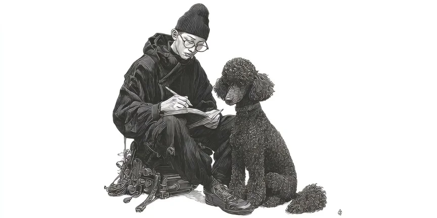
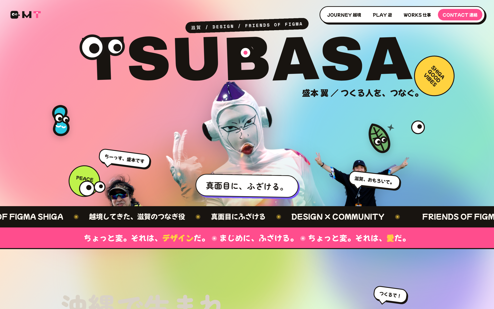
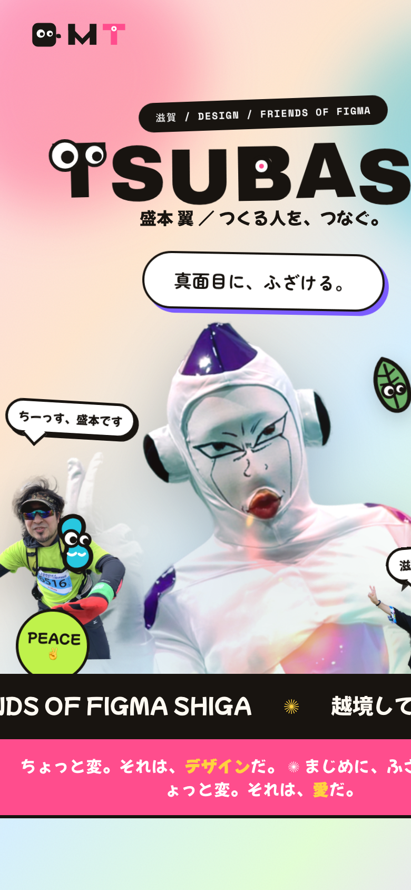
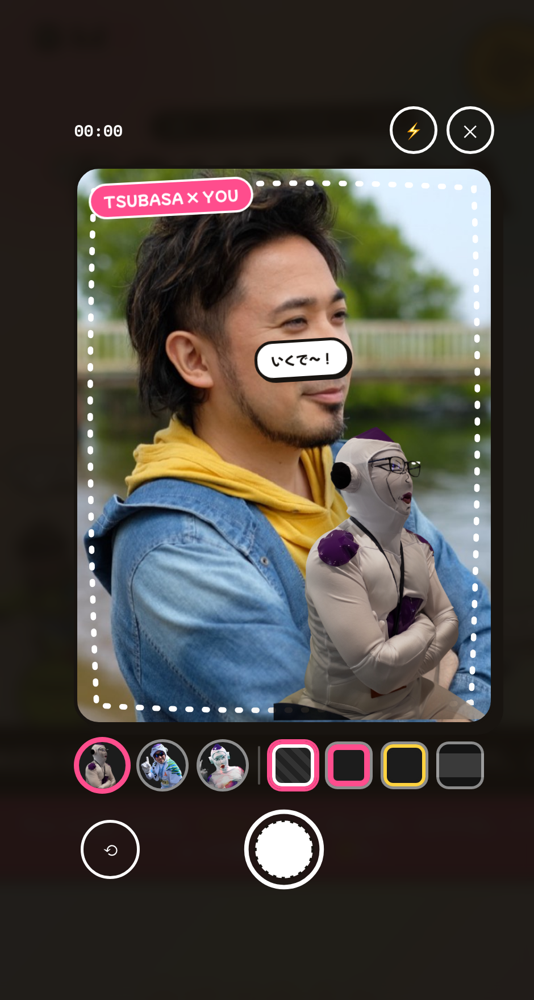

提案書 ／ PROPOSAL ／ 2026
点在する活動（Friends of Figma Shiga ／ リーフワークス ／ 個人の発信）を、ひとつの人物ブランドとして束ね、県内外での第一想起を取りにいく。

木下スタジオは「体験を、翻訳する」を掲げるデザインスタジオ。緻密な手仕事と一貫した世界観で、人やプロダクトの魅力を“伝わる形”に翻訳します。
私たち自身も Friends of Figma Shiga への参加・登壇歴があり、同じコミュニティの文脈と信頼を共有しています。だからこそ、外側の体裁づくりではなく、内側を理解した設計ができます。

本提案は、盛本翼さんの知名度・第一想起を高めることを目的とした、人物ブランディングとサイト制作のプランです。木下スタジオが「体験を翻訳する」という思想のもと、人物の魅力を翻訳して可視化します。
※ 本制作は関係構築を主眼とした取り組みです。完成後は木下スタジオの実績としても掲載させていただく前提です。
「滋賀で面白いことをしたい／滋賀を盛り上げたい人物」として、
盛本翼＝第一想起を取れる状態をつくる。
沖縄生まれ・京都在住・勤務は滋賀。信楽で学んだ「越境」の経歴を持ち、価値観は「真面目にふざける」。Friends of Figma Shiga を率い、教育・実務・地域をつなぐ場をつくっている。
「デザイン専門性（作家性）」×「人物・コミュニティとしての発信力」の2軸で周辺プレイヤーを配置。右上＝専門性も発信力も高い領域は空白で、盛本さんが唯一入れる。
| プレイヤー区分 | デザイン 専門性 | 人物 発信力 | 滋賀の 地域密着 | 第一想起の 余地 |
|---|---|---|---|---|
| 県外の大手デザイン会社 | 5 | 2 | 1 | 低 |
| 滋賀の制作会社 | 4 | 2 | 4 | 中 |
| 個人デザイナー（SNS） | 3 | 3 | 2 | 中 |
| 地域コミュニティ運営（非デザイン） | 1 | 4 | 4 | 中 |
| 盛本 翼（FoF Shiga リーダー） | 5 | 5 | 5 | 大 |
3軸すべてで上位に立てるのは盛本さんだけ。だからサイトは「専門性 × 人物発信 × 滋賀」を一画面で同時に提示し、空白ポジションを先に取り切る設計にします。
出典：Friends of Figma 国内拡大（Figma Japan 発表 / PR TIMES）・Friends of Figma Shiga。スコアは木下スタジオによる戦略評価（5点満点・知名度ゴールからの相対評価）で、市場調査の実測値ではありません。
「知名度UP」を、届く相手から逆算して設計。優先度 P1 > P2 > P3 > P4。
「滋賀でデザインの仲間・学びの場は？」→ FoF Shiga に参加したい層。参加者増がブランドの土台になる。
「信頼できて地域に根ざした、巻き込み力のある人は？」実績と相談導線を求める協業・依頼層。
「滋賀のデザインの"顔"＝登壇/取材できる人は？」露出をくれる層。第三者からの権威づけにつながる。
人柄・生き方（越境／真面目にふざける）に惹かれる応援団。物語と価値観を求める。
各ペルソナは 発見 → 興味 → 比較 → 行動 → 共有 をたどる。サイトはこの導線の受け皿であり増幅器。
「越境してきた、滋賀のつなぎ役。」
本人はデザイナー＝サイト自体が作品。同時に、価値観は「真面目にふざける」。この二面を一枚に同居させるのが設計の核心です。本提案は、人柄を前面に出すPOPトーンで「親しみ」と「記憶に残る個性」を最大化します。
「POP（人柄前面）／中間／ビジネス寄り（信頼前面）」の3トーンを、ペルソナ別の効きやすさ × 重みで加重評価。知名度UPがゴールなので、参加を生む P1 と拡散を生む P4 を重く置いています。
| 評価軸重み | POP 人柄前面 | 中間 | ビジネス寄り 信頼前面 |
|---|---|---|---|
| P1 親近感・参加喚起重み 30% | 5 | 4 | 2 |
| P4 記憶性・人柄重み 25% | 5 | 4 | 2 |
| P2 信頼感（企業・自治体）重み 25% | 3 | 4 | 5 |
| P3 話題性・取材したくなる重み 20% | 5 | 4 | 3 |
| 加重合計（5点満点） | 4.5 | 4.0 | 3.0 |
POP ＝ 4.5点で最有力。唯一の弱点「信頼感（P2）」は、実績セクション・第三者の声・Person構造化データなど設計と実装で補えるため、人柄前面のリスクを消し込めます。＝本提案のトーンを、数字で裏付け。
※ スコアは木下スタジオによる戦略評価（5点満点）。アンケート等の実測値ではなく、ゴール（知名度UP）に対する相対的な効きやすさの評価モデルです。

リサーチ（ペルソナ・カスタマージャーニー）から各セクションを設計しています。装飾ではなく、すべてに役割があります。
| セクション | 主に効く相手 | 役割（CJM） |
|---|---|---|
| Hero | 全員（特にP4） 発見→入口 | 名前＋一言で3秒の第一想起。人柄で掴む。 |
| Story（越境） | P4 興味 | 沖縄→信楽→京都→滋賀。価値観で深掘りの入口。 |
| Activity | P1 興味→行動 | FoF Shiga の熱量と次回情報を上位に。参加ハードルを下げる。 |
| Photo（ツーショット） | P1・P4 共有 | 盛本と撮って投稿＝口コミの起点。後述。 |
| Works | P2・P3 比較→信頼 | 実績で信頼。引用できる肩書きを提示。 |
| Voice | P2・P3 比較 | 第三者の声で権威づけ。 |
| Contact | 全員 行動→共有 | ハブ化。登壇/相談/取材＋SNSへ確実に橋渡し。 |
ロゴもサイトと同じ理論で組み立てます。核は 「信頼（構築美）× 人柄（遊びの一点）」。盛本さんの二面性＝デザイナーとしての知性と、「真面目にふざける」人柄を、ひとつのシステムに同居させます。
太いジオメトリック。先頭Tにギョロ目、Bに的ドット＝遊びの一点。
Morimoto Tsubasa。幾何学パーツ組み＝構築美・信頼。差し色＋的ドット。
角丸＋ギョロ目＋小翼。「真面目にふざける」を擬人化。SNS/faviconで活躍。
上記の理論をそのまま実装した、動作するサイトを用意しました。常時動く配色、本人の写真をカットアウトで散らした遊び、まばたきするロゴなど、「真面目にふざける」を体験として翻訳しています。


静止画ではなく実機をそのまま提示。スクロール・アニメーション・モバイル表示まで、体験として確認いただけます（左：上=PC／下=スマホ）。
▶ 別タブで開く — kinoshita.studio/tsubasa/
スマホのカメラで盛本さん（フリーザ）と一緒に“プリクラ風”の記念写真が撮れる機能を実装。フレーム4種・ポーズ3種を選んでシャッター、その場で保存・SNSシェア。「真面目にふざける」を、見るだけでなく体験して持ち帰れる装置です。
▶ 実機（スマホ推奨）のプレビュー内「PHOTO」セクションから試せます。
見た目だけでなく、見つけてもらう仕組みまで実装済みです。盛本翼さんの名前で検索・SNS共有された時に、正しく・魅力的に表示されます。
「TSUBASA MORIMOTO」＋ MTモノグラム＋ギョロ目マスコット。幾何学の構築美に、遊びのディテール（的ドット・まばたき）を一点。
親しみ・記憶に残る個性（P4・P1に特に効く）。公開後、場面に応じてトーンの濃淡は調整可能。
※ 現在のモックは一部に仮素材（パロディ画像・仮テキスト・第三者の声）を使用。公開時は本人素材へ差し替えます。

サイト＝ハブを公開。3秒で伝わる入口と、活動・実績・連絡導線を整える。SEO・検索の土台は実装済み。
FoF Shiga の各回・登壇・実績をサイトに蓄積。X / note / Discord へ確実に橋渡しし、点を線にする。
登壇・取材・他地域コラボで第三者からの露出を積み増し、「滋賀のデザイン＝盛本」を定着させる。
信頼・人柄・実績の蓄積を、将来の公共的な活動の足場へ。
確認したいこと：肩書きの正式表記／出したい活動の優先度／ドメイン方針／トーン（真面目寄り or 人柄前面）。